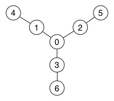
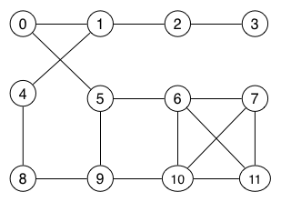

| COMP1927 16s2 | COMP1927 16s2 Practice Prac Exam | Computing 2 |
In the q2 directory (in the file main.c) is a program which
Distance to a vertex V is measured in terms of the number of edges on the shortest path between StartVertex and vertex V. The list of vertices should not include StartVertex and should include all vertices whose distance to StartVertex is less than or equal to Dist. Each relevant vertex should occur in the list exactly once (no duplicates).
Also in the q2 directory are source code for a number of potentially useful ADTs. In particular, the files Graph.h and Graph.c define a Graph ADT which uses an adjacency matrix representation.
The main function prints the list of vertices, but the list is actually computed by the function
int within(Graph g, Vertex s, int d, Vertex *vs) { ... }
defined in the Graph ADT. (It is called within because all of the vertices in the list must be within a distance d of the start vertex).
Your task for this question is to implement the within() function in the Graph.c file.
The within() function takes four parameters:
The function stores all reachable vertices in the vs[] array and returns a count of the number of Vertex values stored in the array. You can assume that the vs[] array is large enough to store all of vertices in the graph, if needed. The order that you store the vertices in the vs[] array is not important; the test scripts sort the output before comparing it against the expected results. You can find a skeleton within() function at around line 272 in the Graph.c file.
To give some concrete examples, consider the following undirected graphs:
|  |  | |
| Graph1 | Graph2 |
The following table shows the sets of vertices that would be produced for various calls to the within() function:
| Call to within() function | x | Vertices in vs[] |
|---|---|---|
| x = within(Graph1,0,1,vs) | 3 | {1,2,3} |
| x = within(Graph1,0,2,vs) | 6 | {1,2,3,4,5,6} |
| x = within(Graph1,6,1,vs) | 1 | {3} |
| x = within(Graph1,6,2,vs) | 2 | {0,3} |
| x = within(Graph1,6,3,vs) | 4 | {0,1,2,3} |
| x = within(Graph2,0,2,vs) | 6 | {1,2,4,5,6,9} |
| x = within(Graph2,0,99,vs) | 11 | {1,2,3,4,5,6,7,8,9,10,11} |
You can find out more about the behaviour of the q2 program by looking at the files in q2/tests directory. Each file named tX.sh contains the commands to run one test. Each test will use one of the files named graphX as input. Each test has a corresponding file tX.exp which contains the expected output from a correct implementation of q2, run using tX.sh.
The q2 directory also contains a Makefile which you use as:
make q2 # build the q2 program
You can test your q2 program using the command:
check q2 # run tests on the q2 program
Once you are satisfied with your program, submit it using the command:
submit q2
This will make a copy of the Graph.c file from the q2 directory as your answer for this question. You can run the submit command as many times as you like, but make sure that your final submission compiles without any errors or warnings. Test your program thoroughly, possibly using test cases additional to those supplied. Your program will be tested with extra tests that are different to the examples in the q2/tests directory.
You can add any additional functions (apart from within()) to the Graph.c file, but you may not change any of the other files.
If, at some stage, you need to "re-install" the files (although you should not need to), you can copy all of the original files into the q2 directory by running the command:
re-start q2
Beware: this will overwrite all of your existing files for this question, so only do it if you seriously mess things up.